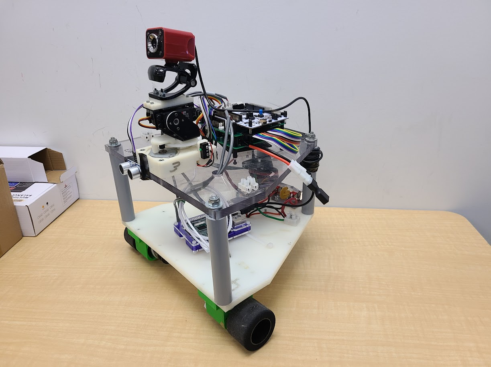
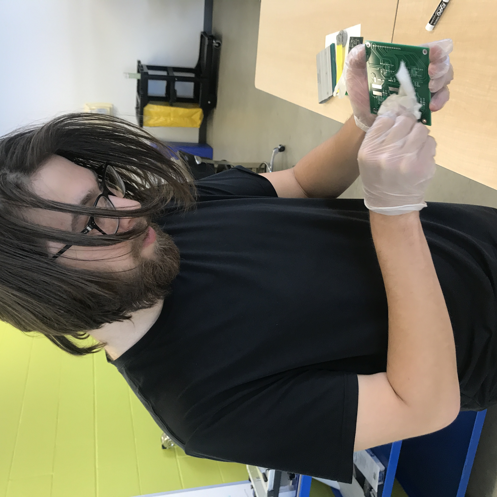
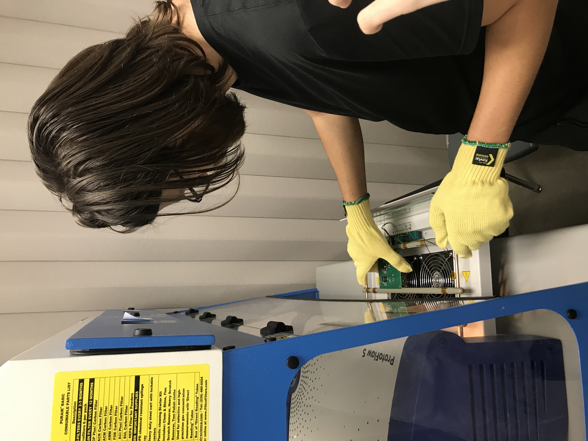
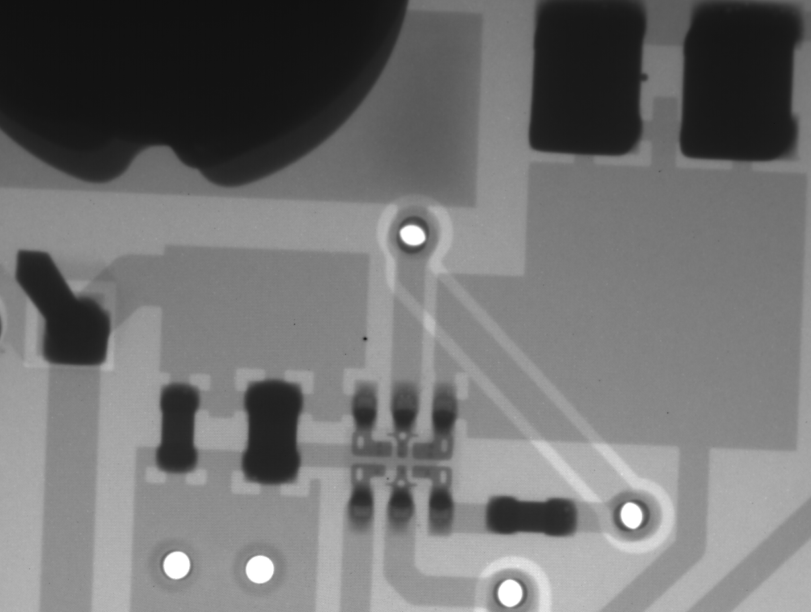
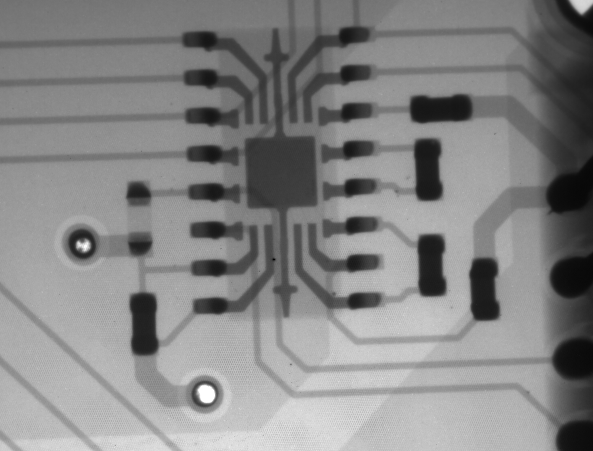
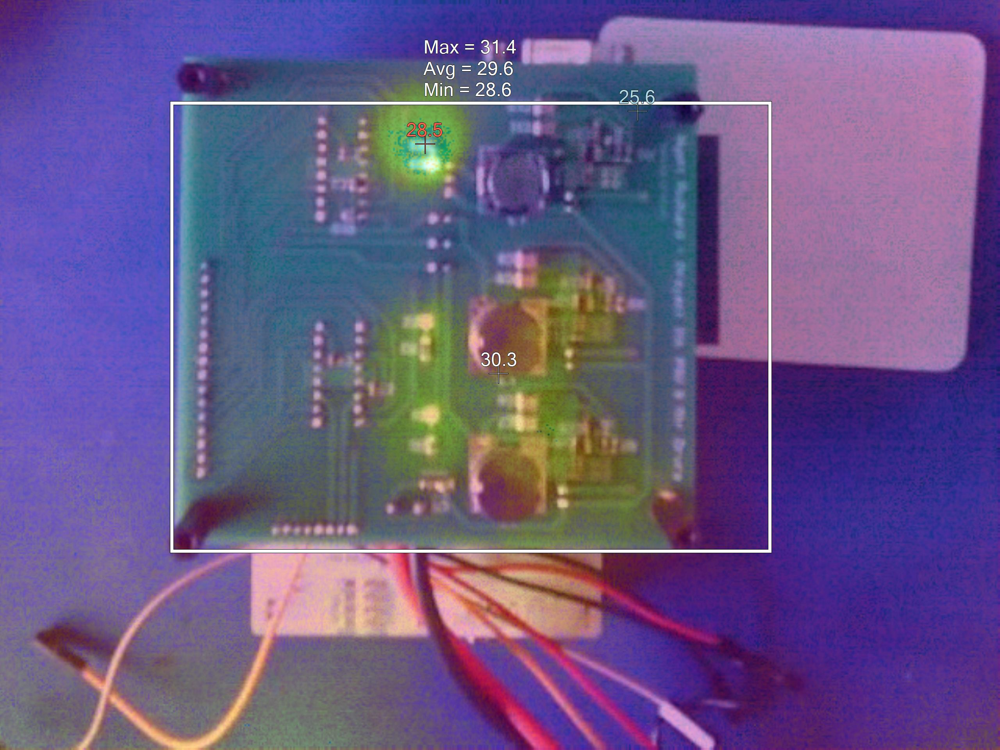
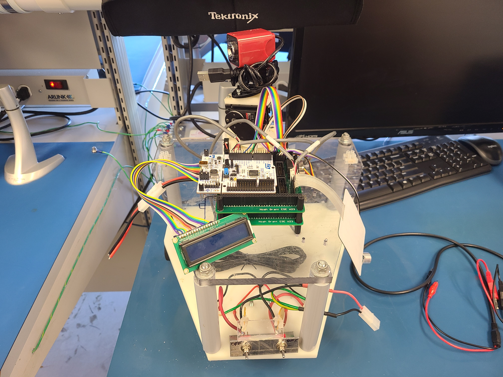

Semester Four/Five Project: Mobile Platform Robot
This project spanned two semesters, in the first semester it was an independent hardware design project and in the second semester it became a collaborative robot integration project which I once again worked with Noah Grant. In Semester 4, I designed, assembled, and tested the Microcontroller Unit (MCU) peripheral board and Power Supply Unit (PSU) boards that would control the Mobile Platform Robot (MPR). In Semester 5, we used those boards to build and test a remotely controlled mobile robot with a camera mount and several onboard peripherals.

The completed MPR with its camera, control boards, and drive base.
Project Architecture
The MPR is built around an STM32F303RE Nucleo MCU and two custom PC/104-style boards: an onboard controller board and a power supply board. The power board accepts a rechargeable battery input between 12.8 V and 30 V and provides regulated 3.3 V, 5 V, and 12 V rails. Those rails supply the MCU, logic and peripherals, and the motor systems respectively.
The controller interfaces with left and right DC motors and encoders, a stepper motor and servo for the camera mount, limit switches, a 16x2 LCD, keypad, and an ultrasonic sensor.
Semester 4: Board Design
The first half of the project was independent work focused on the electronic foundation of the robot. I compared regulator designs based on bill of materials cost, efficiency, and footprint, then selected power circuits for the 3.3 V, 5 V, and 12 V outputs. I also designed the motor-driver interfaces, encoder inputs, camera stepper and servo interfaces, LCD, keypad, ultrasonic sensor, DAC, and communication connections.

Preparing the PCB for assembly.

Reflowing the power supply board.
Assembly and Validation
After the PCBs were manufactured, I applied solder paste, placed the surface-mount components, reflowed the boards, and installed the through-hole parts. The boards were tested for their regulated outputs and inspected by X-ray to check IC connections and identify shorts. The measured power-board outputs were 3.366 V, 5.026 V, and 12.22 V, with a measured battery input of 16.45 V.
Testing uncovered several practical issues, including a bulk capacitor arrangement that needed to be corrected, a motor-header pitch mismatch, and a battery connector that did not fit the board height. These were resolved through board modifications and replacement connections.
Thermal imaging was used to verify that the boards were operating within their thermal limits and to identify any potential hot spots.

X-ray inspection of ics on power-supply board.

X-ray inspection of ics on the micro controller peripheral board.

Infrared inspection used during board validation.
Testing
Board testing and validation at end of semester 4.
Semester 5: Robot Integration
The second half of the project was completed with Noah Grant. We reused the MCU and power supply boards from the previous semester as the control and power foundation for a wireless remote-controlled robot. We integrated the boards with the wheel motors, encoders, camera pan and tilt mechanisms, LCD, and wiring harnesses, then tested the combined system as a complete platform.

The integrated robot with its camera mount, controller boards, LCD, and wiring.
Remote-Controlled Platform
The finished platform uses the MCU to translate control commands into wheel-motor signals and camera-mount motion. Wheel encoders provide feedback for PID-controlled repeatable movement, while limit switches establish the camera position. The LCD and other peripherals provide status and user feedback during operation.
Testing
Integrated robot testing at beginning of semester 5.
Assembled MPR validation at end of semester 5.